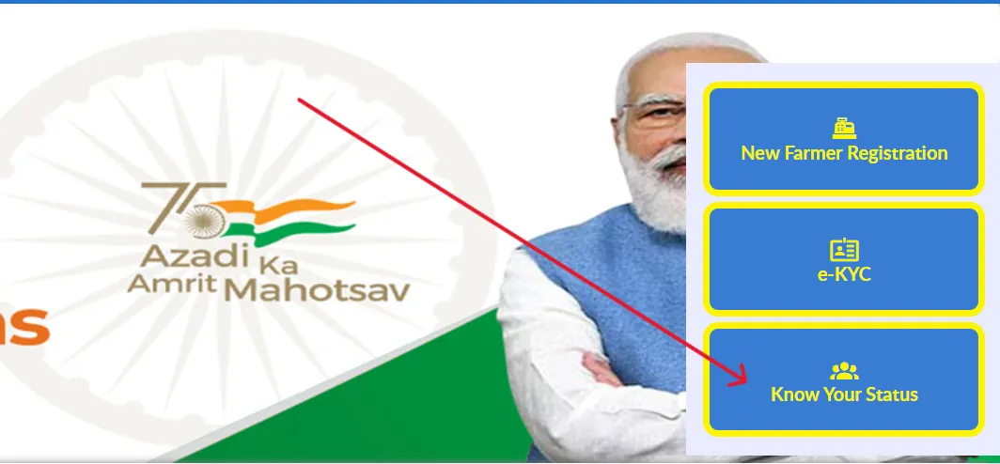
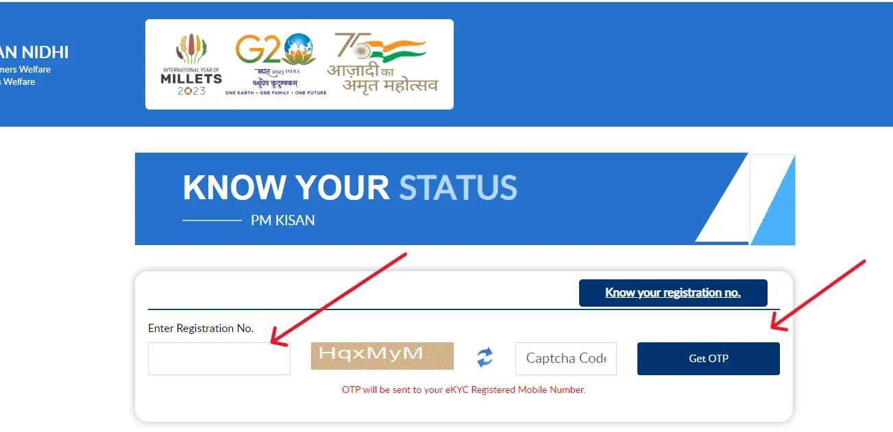
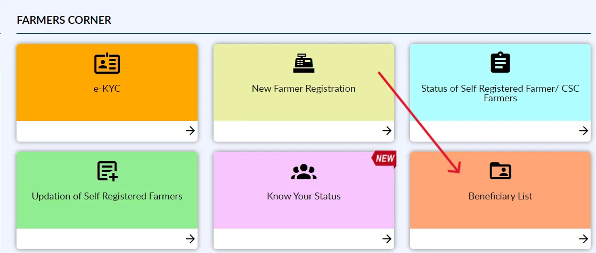
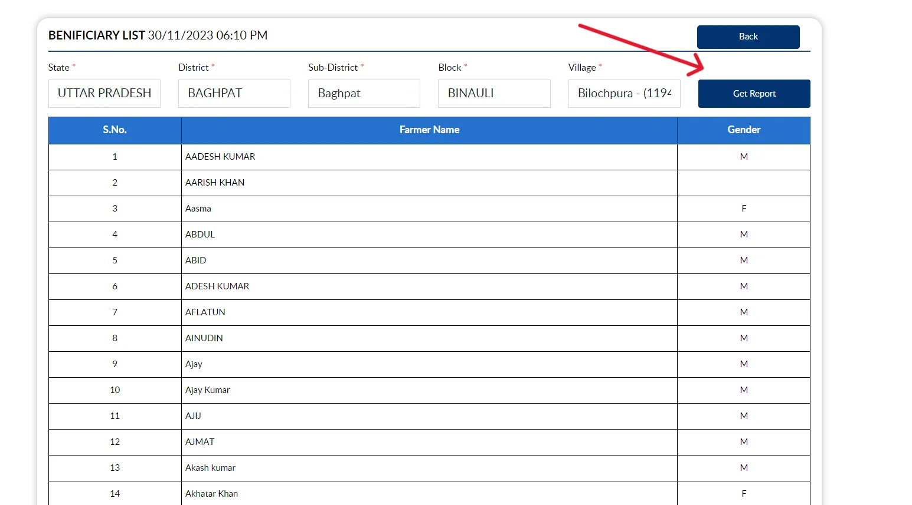
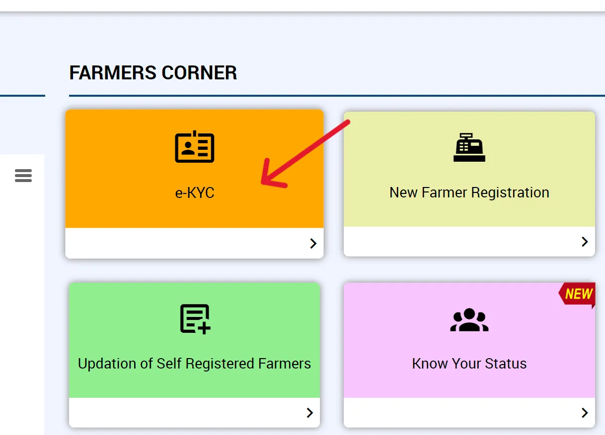
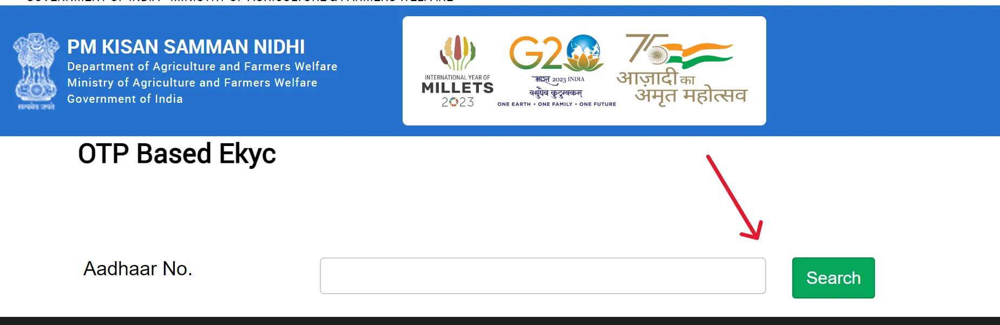
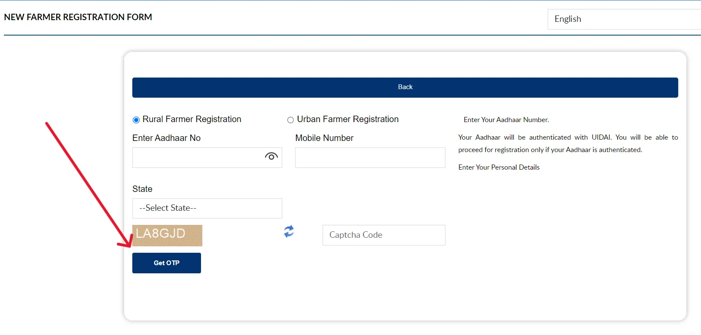
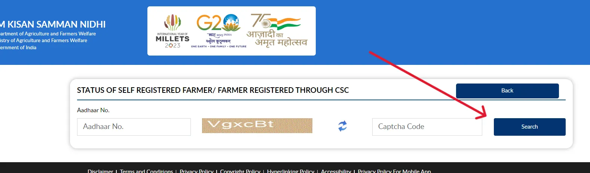

PM Kisan Status - 19th क़िस्त की लेटेस्ट अपडेट, लाभार्थी सूची, eKYC ऑनलाइन
प्रधानमंत्री किसान सम्मान निधि (पीएम-किसान) योजना भारत सरकार द्वारा शुरू की गई एक केंद्रीय योजना है, जिसका उद्देश्य किसानों को आर्थिक सहायता प्रदान करना है।
इस योजना के तहत पात्र किसानों को हर साल ₹6,000 की सहायता दी जाती है, जो तीन किस्तों में दी जाती है। प्रत्येक किस्त में ₹2,000 की राशि सीधे किसानों के बैंक खाते में DBT के जरिए ट्रांसफर की जाती है।
19वीं किस्त की लेटेस्ट अपडेट
प्रधानमंत्री किसान सम्मान निधि योजना की क़िस्त हर 4 महीने के अंतराल पर जारी की जाती है, ऐसे में 19वीं क़िस्त को अब फरवरी महीने में जारी किया जा सकता है. लाभार्थियों से अनुरोध है, कि वे इससे पहले अपनी KYC प्रक्रिया पूरी कर लें.
💡
पीएम किसान योजना की 18वीं किस्त 5 अक्टूबर को जारी की गई, जिसमें 9.4 करोड़ से अधिक किसानों को डायरेक्ट बेनिफिट ट्रांसफर (डीबीटी) के माध्यम से 2000 रुपये प्रति किसान, कुल 20 हजार करोड़ रुपये से अधिक की राशि उनके खातों में ट्रांसफर की गई।
Beneficiary Status देखें
अगर आपको प्रधानमंत्री किसान सम्मान निधि योजना की अगली क़िस्त का इंतजार है, और आप जानना चाहते हैं, कि आपको इस बार इस योजना के तहत मिलने वाला आर्थिक लाभ मिलेगा या नहीं, तो आप लाभार्थी स्टेटस और Beneficary List जरुर देखें, इसे देखने की प्रक्रिया निम्नलिखित है-
-
सबसे पहले आधिकारिक वेबसाइट - https://pmkisan.gov.in/ पर विजिट करें.
-
इसके बाद आपके सामने PM Kisan योजना का ऑनलाइन पोर्टल खुल जाएगा.

- यहाँ आप होमपेज पर मौजूद ' Know Your Status' के विकल्प पर क्लिक कर दें.
- अब आपके सामने एक पेज खुलेगा जहाँ आप अपने रजिस्ट्रेशन नंबर, मोबाइल नंबर और कैप्चा तथा OTP को दर्ज करें.
- इसके बाद आप अपने प्रधानमंत्री किसान सम्मान निधि योजना के लाभार्थी स्थिति को देख सकते हैं.

💡
अगर आप अपना रजिस्ट्रेशन नंबर भूल गए हैं, तो आप इस पेज पर मौजूद लिंक Know Your Registration Number पर क्लिक करके आधार कार्ड और मोबाइल नंबर की मदद से इसे प्राप्त कर सकते हैं.
पीएम किसान योजना Beneficiary List देखने की प्रक्रिया
निम्नलिखित चरणों का पालन करके आप अपने गांव या जिले के लाभार्थियों की सूची देख सकते हैं:

अब आपको निम्नलिखित जानकारी भरनी होगी:
- राज्य (State)
- जिला (District)
- तहसील / उप-जिला (Sub-District)
- ब्लॉक (Block)
- ग्राम पंचायत (Village)

💡
सभी विवरण दर्ज करने के बाद "Get Report" बटन पर क्लिक करें। इसके बाद, आपके द्वारा चुने गए क्षेत्र के लाभार्थियों की सूची स्क्रीन पर दिखाई देगी।
सूची में आप उन सभी किसानों के नाम देख सकते हैं जिन्होंने इस योजना के तहत पंजीकरण किया है और लाभ प्राप्त कर रहे हैं। इसमें आपको लाभार्थी का नाम, पिताजी का नाम, गांव का नाम, और किस्तों की स्थिति दिखाई देगी।
महत्वपूर्ण जानकारी:
- आप इस सूची को डाउनलोड भी कर सकते हैं या इसे प्रिंट कर सकते हैं।
- लाभार्थी सूची में आप देख सकते हैं कि किन-किन किसानों को अभी तक पीएम किसान योजना के तहत राशि प्राप्त हुई है।
यह सूची नियमित रूप से अपडेट होती रहती है, इसलिए अगर आपका नाम इसमें नहीं है तो आप बाद में फिर से चेक कर सकते हैं।
इस योजना के तहत कुछ किसानों को अपात्र घोषित कर दिया गया है, इसके कुछ कारण निम्नलिखित हैं:
- कुछ किसानों ने अपने आयु और खसरा / खतौनी में गलत जानकरी दी थी, इसलिए उन्हें लाभार्थी सूची से बाहर कर दिया गया है.
- कुछ किसानों ने गलत बैंक खाता संख्या तथा IFSC कोड दर्ज किया इसके लिए उनकी किस्तें रुकी हुई हैं.
- कुछ किसानों ने आवेदन पत्र भरते समय किसी भी प्रकार की त्रुटि कर दी थी.
- इसके अलावा जिन किसानों ने अभी तक e-KYC नहीं कराया गया है, उन्हें इस सूची से बाहर कर दिया गया है.
e-KYC प्रक्रिया
पीएम किसान योजना के तहत eKYC करने की प्रक्रिया:
-
सबसे पहले, PM Kisan की वेबसाइट पर जाएं।
-
होमपेज पर आपको "Farmers Corner" सेक्शन दिखाई देगा। इसमें " eKYC" पर क्लिक करें।

इसके बाद आपको अपना आधार नंबर दर्ज करना होगा। सही आधार नंबर भरने के बाद "Search" पर क्लिक करें।

अगर आपका मोबाइल नंबर आधार से लिंक है, तो आपके मोबाइल पर एक OTP (One Time Password) आएगा। OTP को सही स्थान पर दर्ज करें और "Submit" पर क्लिक करें।
💡
यदि आपके द्वारा भरी गई जानकारी सही है, तो आपकी eKYC प्रक्रिया सफलतापूर्वक पूरी हो जाएगी। एक संदेश दिखाई देगा कि "eKYC is successfully completed."
अगर आपका मोबाइल नंबर आधार से लिंक नहीं है:
अगर आपका मोबाइल नंबर आधार से लिंक नहीं है, तो आपको नजदीकी CSC (Common Service Center) पर जाकर eKYC पूरी करनी होगी। वहाँ पर बायोमेट्रिक वेरिफिकेशन के माध्यम से eKYC की जाएगी।
पीएम किसान सम्मान निधि योजना पंजीकरण प्रक्रिया
PM-Kisan योजना पंजीकरण प्रक्रिया निम्नलिखित है:
इसके बाद आपके सामने एक नया पेज खुलेगा, जहाँ आपको 2 विकल्प देखने को मिलेंगे:
- Rural Farmer Registration: यह विकल्प उन नागरिकों के लिए है, जो ग्रामीण क्षेत्रों के किसान हैं.
- Urban Farmer Registration: यह विकल्प उन नागरिकों के लिए है, जो नगरीय क्षेत्रों के किसान हैं.
किसी एक विकल्प का चुनाव करें और आगे बढ़ें.

-
अगले पेज पर, अपना आधार नंबर दर्ज करें और "Captcha Code" को सही ढंग से भरें। इसके बाद, "Click here to continue" पर क्लिक करें।
-
अब आपको अपनी जानकारी भरनी होगी, जिसमें आधार कार्ड नंबर, बैंक खाता विवरण (खाते का IFSC कोड सहित), जमीन का विवरण (जमीन की खसरा संख्या, क्षेत्रफल आदि), मोबाइल नंबर जैसे विवरण शामिल होंगे:
- अपनी जमीन के विवरण (जैसे खसरा नंबर, खाता संख्या, भूमि का क्षेत्रफल) दर्ज करें। यह जानकारी राज्य सरकार के भूलेख रिकॉर्ड से मेल खानी चाहिए।
-
यदि आवश्यक हो, तो आपको आधार कार्ड, बैंक पासबुक, और जमीन से संबंधित दस्तावेज़ अपलोड करने होंगे।
- सभी जानकारी भरने के बाद, इसे ठीक से जांच लें और सबमिट कर दें।
सफलतापूर्वक फॉर्म सबमिट करने के बाद, आपको एकपंजीकरण संख्या (Registration Number) मिलेगी। इसे भविष्य के संदर्भ के लिए नोट कर लें।

कुछ महत्वपूर्ण प्रश्न
PM Kisan Status कैसे चेक करें?
भारत के किसानों के लिए पीएम किसान सम्मान निधि योजना को भारतीय प्रधानमंत्री नरेंद्र मोदी जी के द्वारा लागू किया गया है। इस योजना के तहत केंद्र सरकार द्वारा किसानों के बैंक अकाउंट में DBT सेवा के अंतर्गत प्रतिवर्ष 3 किस्तों में ₹6000 ट्रांसफर किए जाते हैं. 24 फरवरी, 2019 को माननीय प्रधानमंत्री के द्वारा पीएम-किसान योजना गोरखपुर में PM किसान की पहली किस्त जारी की गई थी. इस योजना का बजट 75,000 करोड़ है.
PM Kisan Status कैसे चेक करें?
अगर आप अभी तक इस योजना का लाभ नहीं ले पाए हैं और इस योजना का लाभ लेने के लिए ऑनलाइन आवेदन करना चाहते हैं, तो आपके पास कुछ महत्वपूर्ण दस्तावेज होने आवश्यक, हैं, जिसमें बैंक अकाउंट, पासपोर्ट साइज़ फोटो, आधार कार्ड, मोबाइल नंबर, खाता खतौनी नंबर, आदि दस्तावेज शामिल हैं.
PM Kisan Status कैसे चेक करें?
पीएम किसान लाभार्थी का स्टेटस चेक करने के लिए सबसे पहले आपको आधिकारिक वेबसाइट पर विजिट करना होगा इसके बाद आप फार्मर्स कॉर्नर में मौजूद विकल्प Know Your Status के ऊपर क्लिक कर दें, इसके बाद आपको स्टेटस के पेज पर भेज दिया जाएगा, यहाँ आप अपना रजिस्ट्रेशन नंबर और कैप्चा दर्ज करके Get Data के विकल्प पर क्लिक करके अपने स्टेटस की जांच कर सकते हैं.